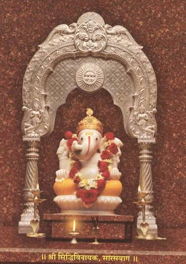

Our Story
About S.B. Joshi Enterprises
Tradition, devotion and responsible choices for Ganeshotsav.
Since 1998
Mr. Satish Joshi
Mr. Satish Joshi started this business in 1998 with the aim of bringing beautiful Ganpati Bappa idols to families with personal service and reasonable pricing.
Over the years, the business has focused on building trust with customers, helping families choose their Bappa and making the booking process simple and convenient.
Our Promise
- Reasonable and transparent pricing
- Personal customer service
- Easy booking and enquiry support
- Collection updated as new Idols arrive
Nature-conscious Ganeshotsav
🌿 Only Shadu Mati Idols
All Bappa idols offered by us are made only in Shadu Mati (natural clay) . Shadu Mati is a traditional clay material and is chosen by us as a more nature-conscious option for Ganeshotsav.
We believe devotion and care for nature can go together. Our message is simple: “Celebrate Bappa with Bhakti, Bring Bappa with Care.”

Our Bappa, Our Nature
🙏 Shadu Mati • Pure Devotion • Responsible Celebration
“Mati se Bappa, Bhakti se Utsav.”
Welcome Ganpati Bappa with devotion and respect for our surroundings.
“Shadu Mati, Nature ki Saathi.”
Traditional natural clay for a more nature-conscious Ganeshotsav.
“Bappa Ghar Aaye, Prakriti Bhi Muskuraye.”
Celebrate the festival while keeping care for nature in mind.
“Parampara Jode, Prakriti Sanware.”
A beautiful balance of tradition, faith and responsible choices.
Pooja Essentials
🪔 Our Pooja Articles
Along with Ganpati Bappa idols, we also provide essential Pooja Articles for your Ganeshotsav celebration.
Agarbatti
Fragrant incense sticks traditionally used to create a pleasant and devotional atmosphere during Pooja.
Dhup
Dhup is commonly used during Aarti and Pooja for its traditional fragrance.
Kapoor & Wati
Kapoor and Wati are useful essentials for Aarti and daily worship.
Halad & Kunku
Halad and Kunku are traditional auspicious items used during Ganpati Pooja.
Attar
Attar can be used as a traditional fragrant offering during festive worship.
Ashtgandha
Ashtgandha is a traditional fragrant paste used as part of devotional rituals.
Vastramal
Vastramal is a decorative devotional item used for adorning Bappa.
View All Pooja Articles
Our Pricing Philosophy
We aim to keep prices reasonable so that more families can welcome Bappa home. Exact prices depend on the Idol, size and current collection, and are confirmed by the shop before booking.